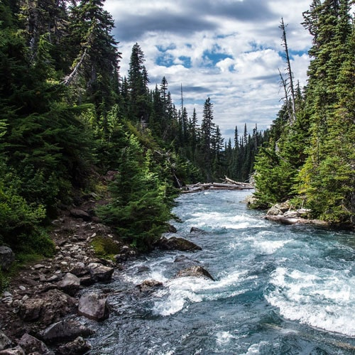
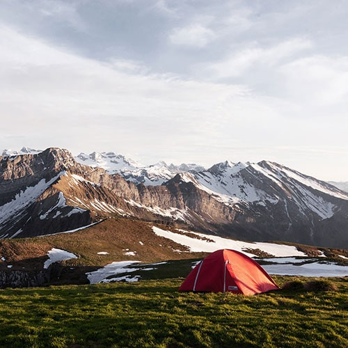
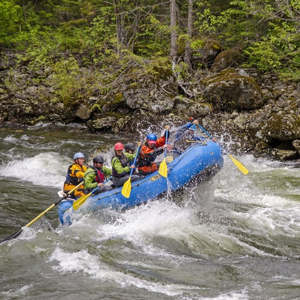

About the Zambezi River and Victoria Falls
he Zambezi is a historical place coupled with the amazing rafting experience, there is no better place to have an wonderful time with your friends and family. The name "Zambezi" was coined from the Tonga phrase "Kasambabezi", which means "only those who know can swim or take bath". This was so because you were supposed to be careful when taking bath on the banks of the river as it was infested with crocodiles.
One of the reasons this river is special is because it flows through six countries. The source of the river is North-western Zambia and it flows through the greater part of Southern Zambia and Northern Zimbabwe. The Zambezi river flows into the Indian Ocean.
Unlike many other rivers of this caliber, the Zambezi river is not undammed. The power of the Zambezi river is harnessed along its journey at two points, the first is the Kariba Dam in Zimbabwe and the second is the Cahora Bassa Dam in Mozambique. Both these dams are sources of hydroelectric power and supply a large portion of power to Zambia, Zimbabwe and South Africa.
The Zambezi river is split into three sections: Upper Zambezi, Middle Zambezi and the Lower Zambezi.
The Upper Zambezi is mainly populated by farmers, pastoralists, and fishermen. During the rainy season, when the plains are flooded; a ceremony known as the Ku-omboka Ceremony take place as the local people move to the higher ground to escape the flood waters. The river turns east and forms a border between Zambia and Namibia this is at the Katima Mulilo rapids.
It finally meets at the Chobe river and shortly forms a border with Botswana, before becoming the border between Zimbabwe and Zambia. This is the point at which the four countries; Botswana, Namibia, Zambia and Zimbabwe meet. The river then flows about another 80km down towards Victoria Falls.
This section above the falls is where a lot of fun activities including canoe trips, river cruises, kayaking and daily floats. It is a wonderful area with many islands and channels, crystal clear waters, and beaches. Beautiful birds and wildlife around are a sight to behold as well. The Zimbabwe side is a national park called the Zambezi National Park while on the Zambian side there are many small lodges which blend into the banks of the river, plus about 20kms of the river's shoreline lies within the Mosi-oa-Tunya National Park.
The Victoria Falls which is the boundary between the upper and middle Zambezi. The Zambezi River is a grade 5 river. The river gets very wild and fun for White Water Rafting. The Victoria Falls also serves as a backdrop for many other adventure sports including the famous bunge jump from the Victoria Falls Bridge.


Rivers


Camping


Rapids

Rafters

Current

Paddle